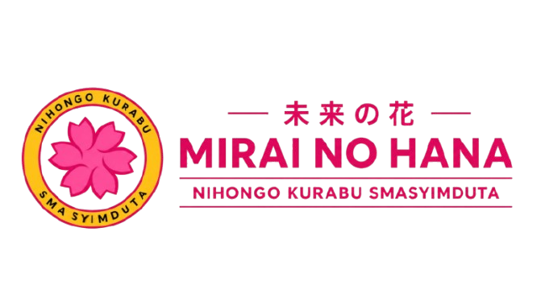

[Isi tahun berdiri]
Isi tanggal atau periode resmi berdirinya MIRAI NO HANA di sini agar mudah diperbarui oleh pengurus.

MIRAI NO HANA / NIHONGO KURABU
TENTANG MIRAI NO HANA
MIRAI NO HANA adalah ruang belajar dan berkarya untuk mengenal bahasa Jepang, budaya, dan pengalaman belajar bersama. Isi profil organisasi dapat disesuaikan oleh pengurus ketika informasi resminya tersedia.
LIHAT KELAS →SEJARAH SINGKAT
Isi tanggal atau periode resmi berdirinya MIRAI NO HANA di sini agar mudah diperbarui oleh pengurus.
MIRAI NO HANA hadir sebagai ruang untuk belajar bahasa Jepang, berbagi ketertarikan budaya, serta tumbuh lewat karya dan kebersamaan.
IDENTITAS ORGANISASI
Tempat untuk mengenal bahasa Jepang dengan langkah yang ramah dan bertahap.
Makna logo: bunga melambangkan pertumbuhan dan harapan; bentuk lingkaran menggambarkan kebersamaan dalam belajar.
Tempat untuk berbagi ide, karya, kegiatan, dan kebersamaan anggota.
MISI MIRAI NO HANA
Menghadirkan langkah belajar bahasa Jepang yang terasa ringan dan dapat diikuti bersama.
Mendorong anggota untuk berbagi ide, berproses, serta berkontribusi dalam kegiatan Nihongo Kurabu.
PERTEMUAN MINGGUAN
Jadwal ini sengaja dibuat mudah diedit karena jadwal resmi belum tersedia di proyek.
KEPENGURUSAN
Nama belum tersedia, jadi setiap kartu memakai placeholder jabatan yang jelas dan dapat diganti pengurus.

KETUA
Ketua Organisasi
WAKIL KETUA
Wakil Ketua Organisasi
SEKRETARIS 1
Sekretaris Utama
SEKRETARIS 2
Sekretaris Pendamping
BENDAHARA 1
Bendahara Utama
BENDAHARA 2
Bendahara Pendamping
HUMAS 1
Hubungan Masyarakat
HUMAS 2
Hubungan Masyarakat